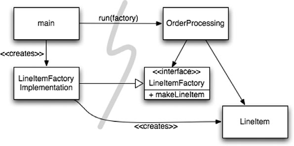

Could you manage all the details yourself? Probably not. Even managing an existing city is too much for one person. Yet, cities work (most of the time). They work because cities have teams of people who manage particular parts of the city, the water systems, power systems, traffic, law enforcement, building codes, and so forth. Some of those people are responsible for the big picture, while others focus on the details.
Cities also work because they have evolved appropriate levels of abstraction and modularity that make it possible for individuals and the “components” they manage to work effectively, even without understanding the big picture.
Although software teams are often organized like that too, the systems they work on often don’t have the same separation of concerns and levels of abstraction. Clean code helps us achieve this at the lower levels of abstraction. In this chapter let us consider how to stay clean at higher levels of abstraction, the system level.
Separate Constructing a System from Using It
First, consider that construction is a very different process from use. As I write this, there is a new hotel under construction that I see out my window in Chicago. Today it is a bare concrete box with a construction crane and elevator bolted to the outside. The busy people there all wear hard hats and work clothes. In a year or so the hotel will be finished. The crane and elevator will be gone. The building will be clean, encased in glass window walls and attractive paint. The people working and staying there will look a lot different too.
Software systems should separate the startup process, when the application objects are constructed and the dependencies are “wired” together, from the runtime logic that takes over after startup.
The startup process is a concern that any application must address. It is the first concern that we will examine in this chapter. The separation of concerns is one of the oldest and most important design techniques in our craft.
Unfortunately, most applications don’t separate this concern. The code for the startup process is ad hoc and it is mixed in with the runtime logic. Here is a typical example: public Service getService() {
if (service == null)
service = new MyServiceImpl(...); // Good enough default for most cases?
return service;
}
This is the LAZY INITIALIZATION/EVALUATION idiom, and it has several merits. We don’t incur the overhead of construction unless we actually use the object, and our startup times can be faster as a result. We also ensure that null is never returned.
Separate Constructing a System from Using It 155
However, we now have a hard-coded dependency on MyServiceImpl and everything its constructor requires (which I have elided). We can’t compile without resolving these dependencies, even if we never actually use an object of this type at runtime!
Testing can be a problem. If MyServiceImpl is a heavyweight object, we will need to make sure that an appropriate TEST DOUBLE1 or MOCK OBJECT gets assigned to the service field before this method is called during unit testing. Because we have construction logic mixed in with normal runtime processing, we should test all execution paths (for example, the null test and its block). Having both of these responsibilities means that the method is doing more than one thing, so we are breaking the Single Responsibility Principle in a small way.
Perhaps worst of all, we do not know whether MyServiceImpl is the right object in all cases. I implied as much in the comment. Why does the class with this method have to know the global context? Can we ever really know the right object to use here? Is it even possible for one type to be right for all possible contexts?
One occurrence of LAZY-INITIALIZATION isn’t a serious problem, of course. However, there are normally many instances of little setup idioms like this in applications. Hence, the global setup strategy (if there is one) is scattered across the application, with little modularity and often significant duplication.
If we are diligent about building well-formed and robust systems, we should never let little, convenient idioms lead to modularity breakdown. The startup process of object construction and wiring is no exception. We should modularize this process separately from the normal runtime logic and we should make sure that we have a global, consistent strategy for resolving our major dependencies.
One way to separate construction from use is simply to move all aspects of construction to main, or modules called by main, and to design the rest of the system assuming that all objects have been constructed and wired up appropriately. (See Figure 11-1.) The flow of control is easy to follow. The main function builds the objects necessary for the system, then passes them to the application, which simply uses them. Notice the direction of the dependency arrows crossing the barrier between main and the application.
They all go one direction, pointing away from main. This means that the application has no knowledge of main or of the construction process. It simply expects that everything has been built properly.
Sometimes, of course, we need to make the application responsible for when an object gets created. For example, in an order processing system the application must create the 1.
[Mezzaros07].

156